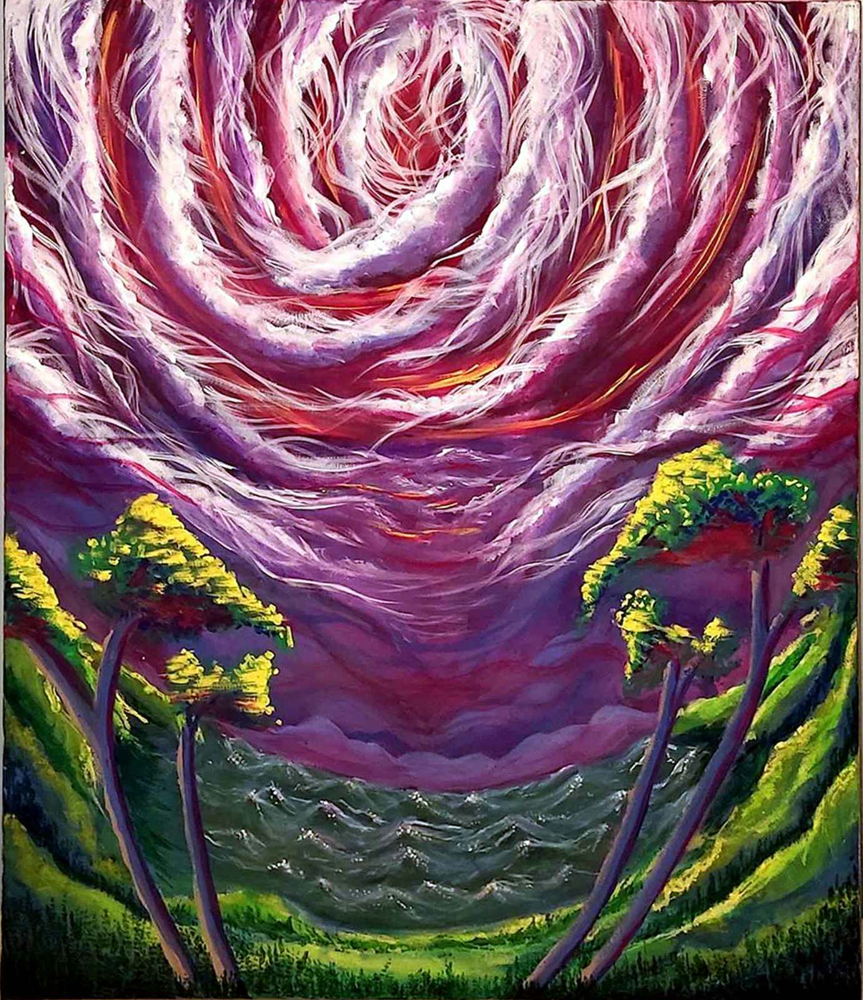
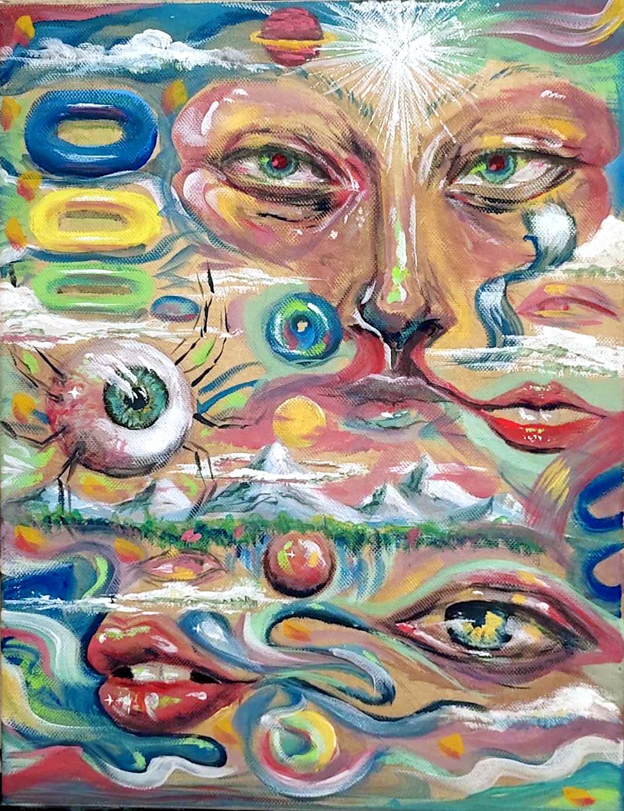
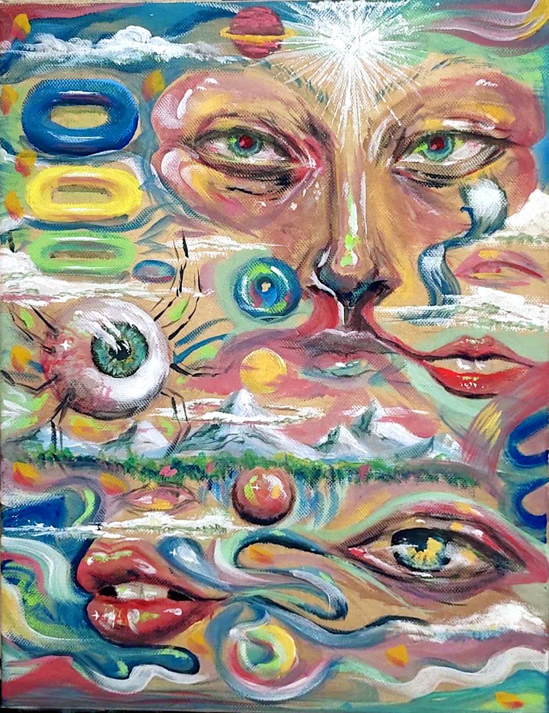
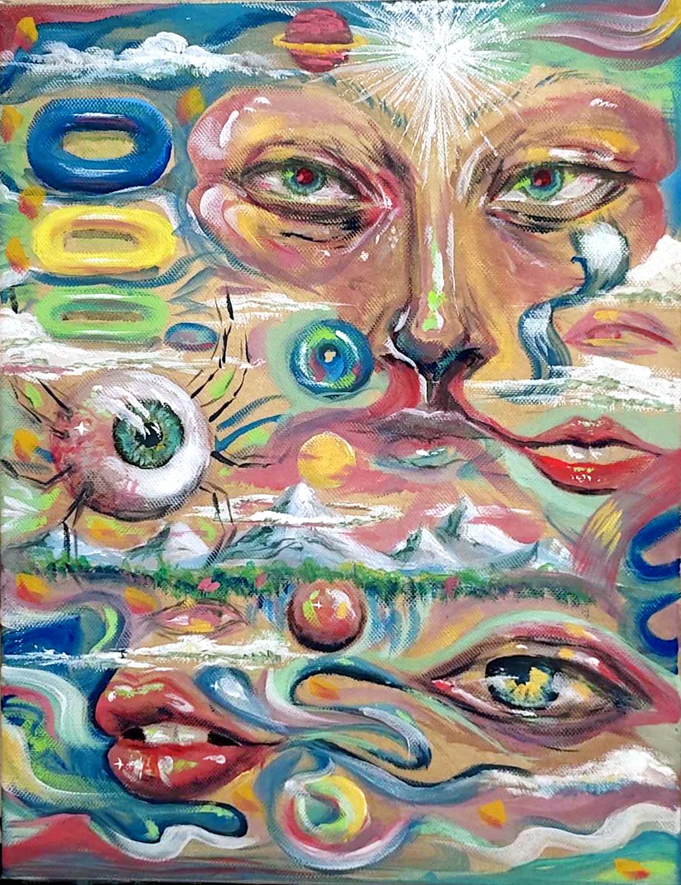

Хоби
Уште од мали нозе најдов начин да се издразувам на визуелен начин преку цртањето. До ден денес сеуште наоѓам инспирација за да се изразувам визуелно. Темите на своите дела ги црпам од различни извори. Покрај нешто од секојдневниот живот, голем дел од моите дела се плод на мојата имагинација.

 

